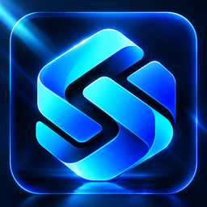
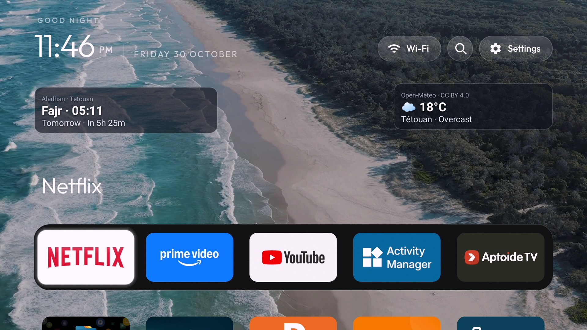

▣
خلفياتك الخاصة
خصص شاشة التلفاز بالصور والفيديوهات المحلية.

SecretoTV Launcherواجهة أنيقة وسريعة تمنحك حرية تخصيص شاشة Android TV وGoogle TV، مع خلفياتك المفضلة واختصارات التطبيقات.

لقطات حقيقية من التطبيق، دون واجهات وهمية.
خصص شاشة التلفاز بالصور والفيديوهات المحلية.
رتب المفضلة وابحث عن التطبيقات وأدر التطبيقات المخفية.
معلومات مفيدة على الشاشة الرئيسية. الأذان التلقائي مخطط له في الإصدار v1.3.0.
اضغط على أي صورة لعرضها بحجم أكبر.
مطور Secreto TV Launcher وصانع محتوى تقني على قناة SecretofNet. التقنية أسهل لحياة أفضل.